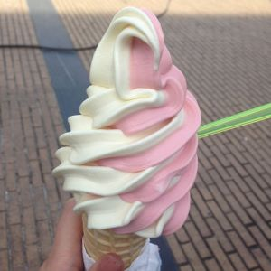

Manger est l'un des plus grands plaisirs du voyage ou de la vie en Italie et cela permet de découvrir la culture et les traditions de chacune de ses régions.
Structure des repas en Italie
Gli Antipasti (Entrée)
Les antipasti sont des préparations culinaires d’origine Italienne que l’on sert traditionnellement avant les repas. Les ingrédients typiques d’un antipasti traditionnel incluent des viandes cuites, des olives, des peperoncini, des champignons, des anchois, des cœurs d’artichauts, des fromages divers (comme la provolone ou la mozzarella), des viandes décapées et des légumes marinés dans de l’huile ou du vinaigre.
Primo (1premier plat)
soit : Pâtes sous toutes leurs formes, longues ou courtes avec comme sauce : simple tomate, poisson ou fruits de mer, viandes, légumes Riz (en risotto) Gnocchi (petites boulettes de pomme de terre ou de semoule de blé) Potages (différents types de pâtes, cuites dans un bouillon), ou minestrone
Les pates à la carbonara est l'un des préferer plat des italients.
Secondo piatto (second plat)
Secondo, viande ou poisson (au four, barbecue, sauté,…), servi avec ou non un contorno (légumes ou salades) et surtout pas de féculent (pâtes ou riz), à part du pain

Contorno ou Formaggio (fromage)
Le fromage est indispenssable pour les italiens,a chaque fin de repas du fromage est proposé.
Dolce (dessert)
l'un des principaux dessert préferer des italiens est la glace.
Caffè Espresso (Expresso) et/ou digestif